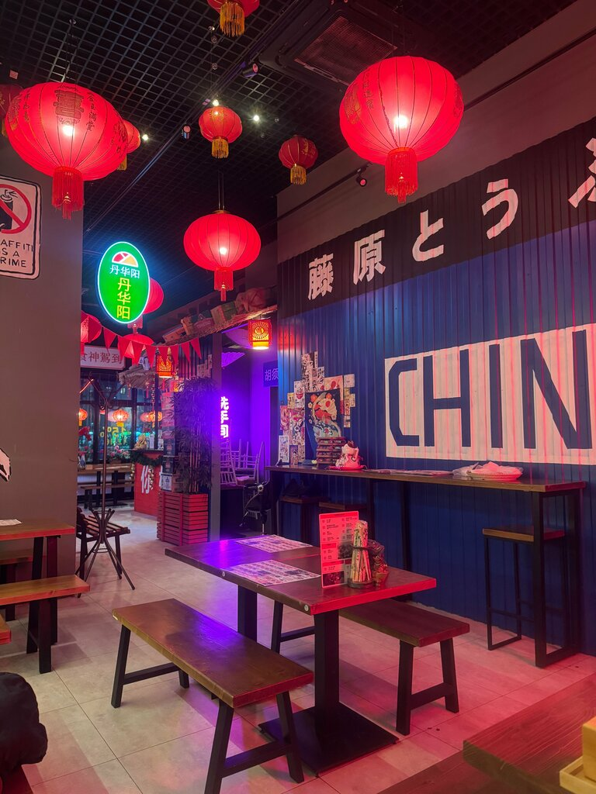
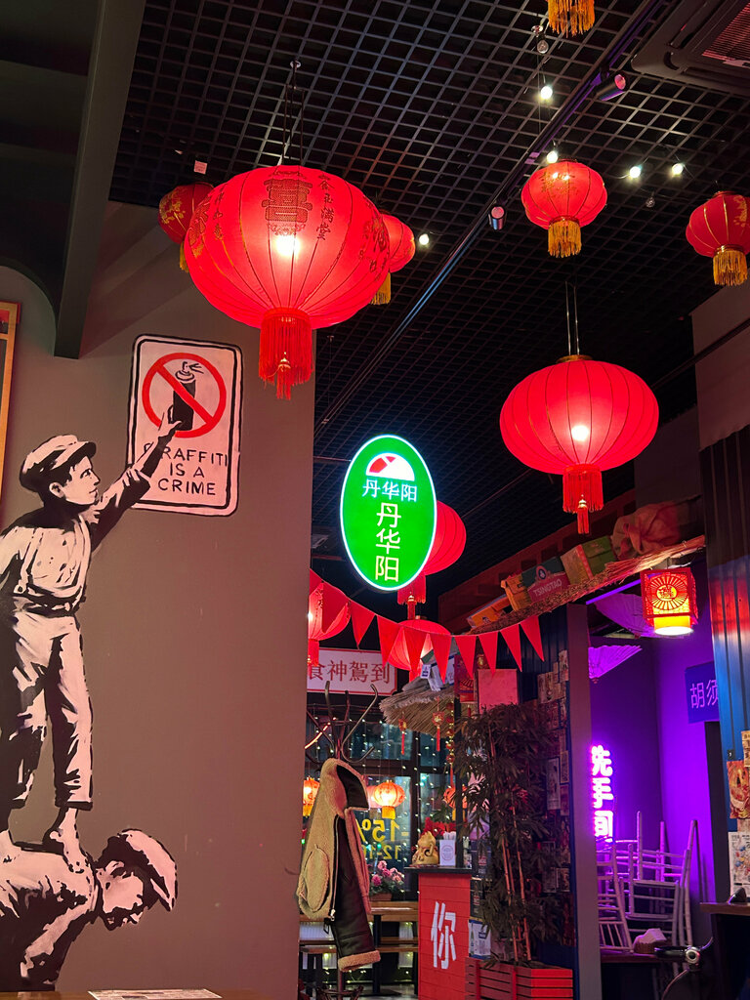
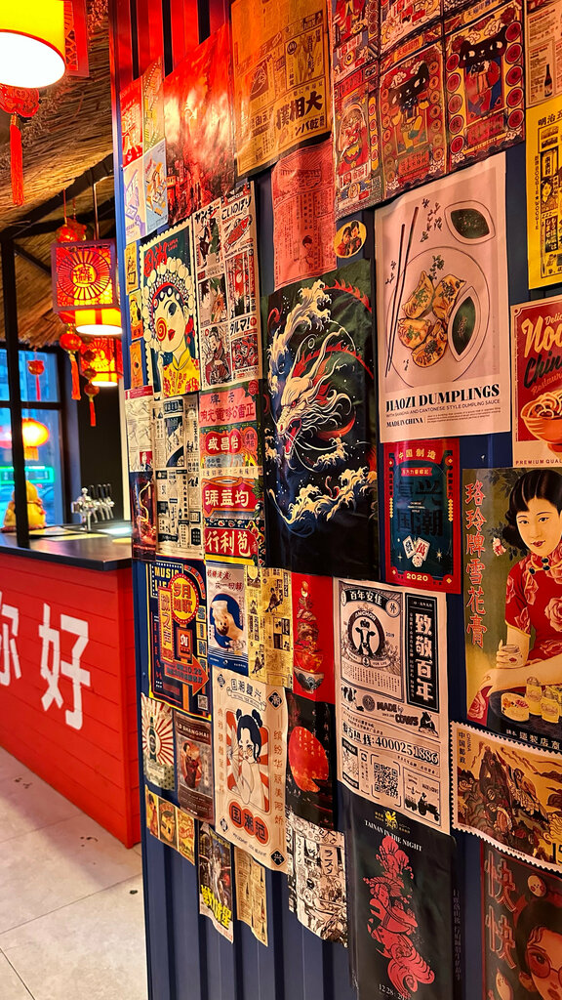
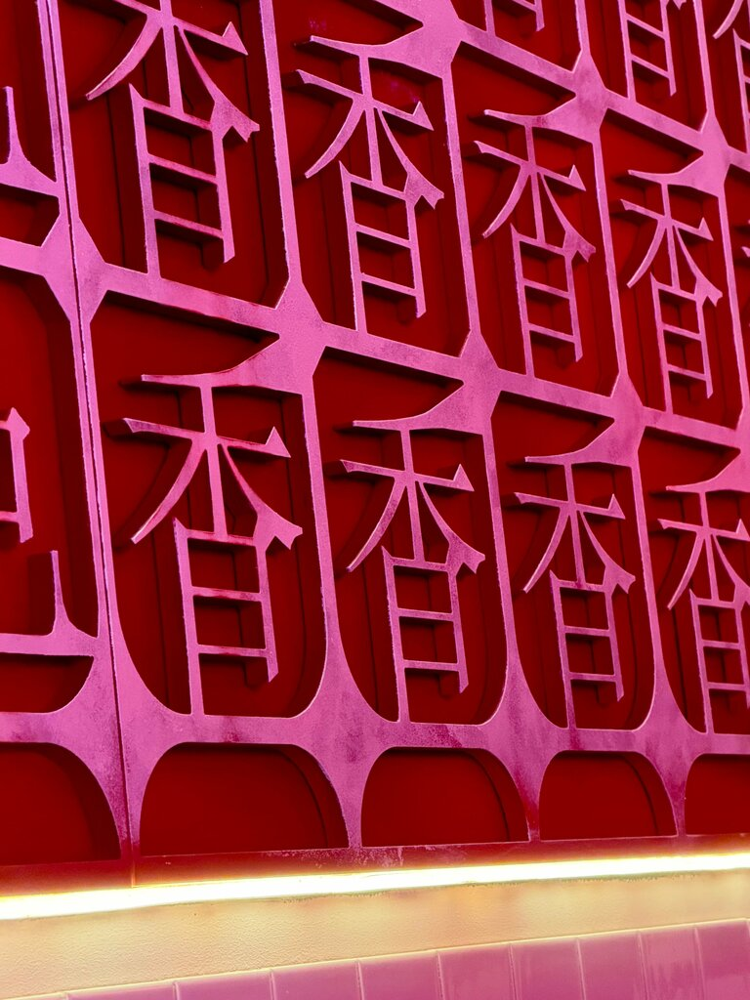

Комендантский проспект, 62 ЖК «Чистое небо»
中式食堂
Китайский
буфет
Тихая китайская улочка в спальном районе. Стрит-арт на стенах, китайский хип-хоп, холодное пиво и порции, которые не оставляют голодным.
О месте
Не шаурмечная.
Не «ещё один азиат».
Своё место на районе.
Гости пишут одно и то же: зашли случайно — и остались. Небольшое, уютное, с неонами, красными фонарями и граффити на колоннах. Музыка в меру. Девушки в зале реально помогают выбрать. А по будням с 12 до 16 на меню скидка 15%.
«Атмосферно, будто находишься на тихой китайской улочке.» Камилла · Яндекс Карты
- Доставка и навынос
- Можно с собакой
- Wi-Fi и розетки
- Парковка
- До 40 мест
- Кофе и чай с собой



Атмосфера
Зацените стрит-арт.
И фонари. И неон.
Гости говорят
4.6 из 5 · 300 отзывов
Настоящие отзывы с Яндекс Карт. Без рерайта «под маркетинг».
★★★★★
Аутентичное место на районе: большой выбор блюд китайской кухни, приятная музыка, отзывчивый персонал, стильный интерьер. Пробовала курицу в кисло-сладком соусе — очень вкусно! Бонусом по будням в обед действует скидка на меню.
★★★★★
Совершенно случайно забежали охладиться — и открыли прикольное местечко. Китайское холодное пиво, блюда с мясом и курицей, необычные салатики. Небольшое, но очень уютное. Очень порадовал стрит-арт на стенах. Короче, всем советую сюда зайти.
★★★★★
Был проездом, голодный. Приятнейшие девушки в зале, досконально про все блюда рассказали. Порции большие, очень вкусно! Наелся супом, жареный рис забрал с собой. Там полная коробочка, до верха, утрамбованно. Приятно, чисто, быстро. 5+
★★★★★
Очень вкусно! Очень уютно, музыка в меру громкая. Ухоженный интерьер, милые официантки. Брали пельмени и жареное молоко — деликатес китайский. Цена не кусается. Китайское тёмное пиво пьётся как светлое, чувствуется терпкость.
★★★★★
Для кофе в спальном районе — кайф! Буфет очень выгодно выделяется на фоне уже задолбавших шаурмечек. Красивый интерьер, хороший персонал, приготовили всё быстро. Приду сюда ещё.
★★★★★
Приятное и очень атмосферное место. Крутой интерьер в китайском стиле и аутентичная музыка создают настроение ностальгии по Китаю. Зайду ещё.
★★★★★
Вкусно. Отличный сервис. Быстро готовят. Приятный интерьер. Интересная и приятная музыка — китайский хип-хоп. Минусы: нет. Всячески рекомендую.
★★★★★
Атмосферно, будто находишься на тихой китайской улочке, приятное освещение. Понравились баклажаны и говядина с бамбуком. Всё принесли быстро.
Приходи
Комендантский, 62
ЖК «Чистое небо», первый этаж. Ближе всего метро «Комендантский проспект» и «Плесецкая» — около 4 минут пешком.
- Адрес
- Санкт-Петербург, Комендантский проспект, 62
- Телефон
- +7 (812) 628-68-88
- Часы
-
Пн–чт, вс · 12:00–22:00
Пт–сб · 12:00–23:00 - Обед
- −15% на меню с 12:00 до 16:00 по будням